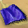
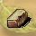
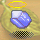
【釀酒】
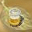 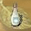 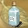 |
| Top >> |
【調配】
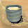 （毒性 5） （毒性 5） （毒性 5） 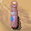 （毒性 5） 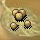 （毒性 5） 暫時力量 + 4 藥效10小時 ( 遊戲時間 )
| （毒性 5） 暫時敏捷 + 4 藥效10小時 ( 遊戲時間 )
| 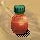 （毒性 5） 每小時回復 10 hp、3 mp 共20小時 ( 遊戲時間 )
| （毒性 5） （毒性 5） （毒性 5） （毒性 5） （毒性 5） （毒性 5） （毒性 5） 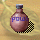 （毒性 5） 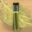 （毒性 5） |